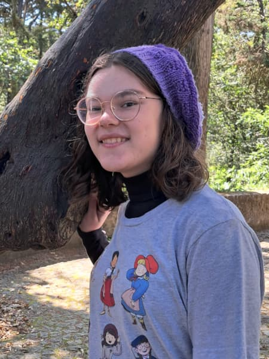
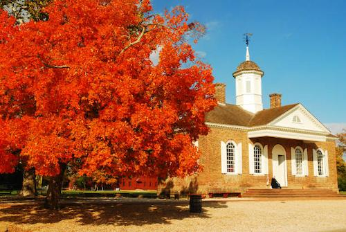

About me!
Hi! My name is Brita and I'm from Virginia. I'm doing concurrent enrollment right now and I'm a senior in high school. I love learning and history. I also love historical fashion, musical theater (I'm currently playing the evil stepmother in a production of Cinderella, but I'm really very nice), knitting and crochet, playing piano and organ, and reading. My favorite book is Pride and Prejudice, and I think 1910s fashion is fabulous.
Virginia
Virginia is a state in the eastern United States. It was the 10th state to ratify the Constitution and has the oldest permanent English settlement in North America. Its capital is Richmond and its geography includes mountains, forests, beaches, rivers, waterfalls, and caves. Virginia is known for its rich history starting in the 1600s and continuing to today. One of its most famous cities is Williamsburg, the original capital city and currently home to Colonial Williamsburg (the largest living history museum in the world), Busch Gardens, and the College of William and Mary.